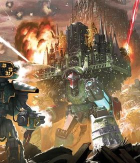
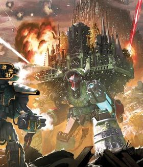

These characters come from the fictional setting of Warhammer 40k. This fictional universe is part of the sci-fi, fantasy, and grimdark genres. The story takes place in the year 40,000. In this universe, many sentient/intelligent alien races(including humanity) fight each other to vie for control of the entire milky way galaxy.
The human faction of Warhammer 40k is called the “Imperium of Man”. The Imperium is a galaxy-spanning empire that consists of roughly 1,000,000 worlds. However, it is not the only empire in the galaxy. The Imperium fight against uncountable horrifying and unimaginable creatures of the galaxy.
To combat this, the Imperium creates its own horrifying and unimaginable soilders